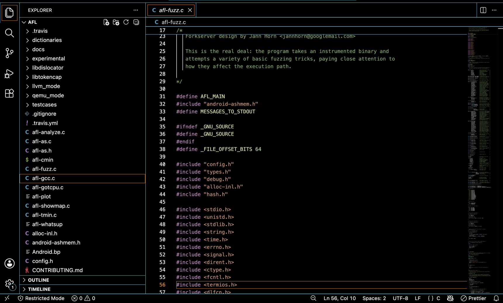

GUI-based editors are text editors with a graphical interface. They usually provide windows, menus, tabs, file explorers, split panes, and mouse support in addition to keyboard shortcuts. Their main advantage over terminal-based editors is visibility and integration: you can manage multiple files, see project structure more easily, access diagnostics and refactoring tools, and switch between editing, searching, and running code with less friction. Terminal-based editors remain lightweight and useful, but GUI editors often support larger, multi-file workflows more comfortably.
One popular GUI-based editor is Visual Studio Code (VS Code). It is a code editor with a project-oriented user interface: an Explorer on the left, editors in the main area, sidebars for views, a panel for output and the integrated terminal, and support for many editor groups arranged side by side.
This matters because most contemporary programming work is not done in isolated single files. You need to compare files, search across a folder, trace definitions, inspect warnings, and configure tooling. VS Code supports that style of work in a way that is highly visible and approachable — it makes "how editors scale to real projects" easier to learn than a minimal terminal editor alone would.

Terminal editors focus on portability and immediacy; GUI-based editors focus on integrated multi-file development. Neither is forced on you as a fixed identity — editor choice is part of professional practice, and different environments genuinely support different workflows. The rest of this week uses VS Code as the concrete example when discussing navigation, tooling, refactoring, debugging, and remote development — starting with the hands-on basics in 3.8.
FIT2109 · Week 3 · Monash University · by Dr. Zahra Mirzamomen